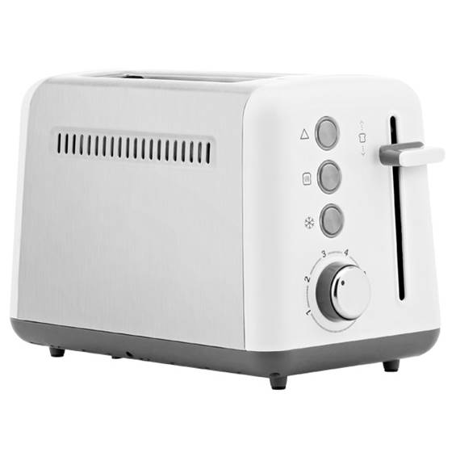
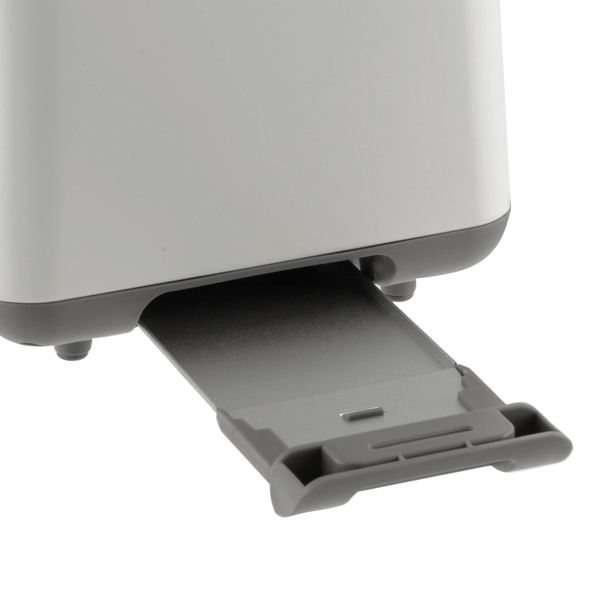
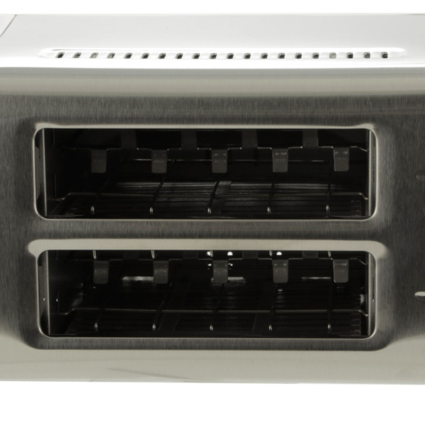
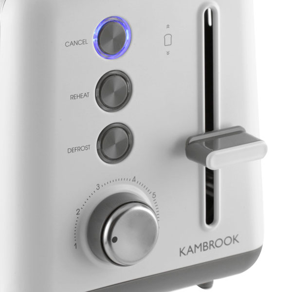
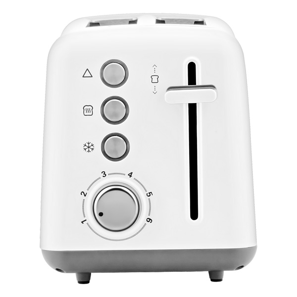

Тостер Kambrook ATM401
Вопрос «что съесть на завтрак» решен. Стильный тостер Kambrook ATM401 поджаривает для Вас хлеб до нужного состояния – установите одну из 6 степеней обжаривания.
При необходимости используйте замороженный хлеб: модель имеет режим разморозки. Приготовление можно остановить в любой момент. Крошки попадают в поддон, предотвращая образование лишнего мусора.
Тостер Kambrook ATM401 – это современный кухонный прибор, который позволит вам готовить вкусные и поджаренные тосты.
Вместимость и производительность
Аппарат позволяет одновременно готовить 2 тоста в двух отсеках, каждый из которых помещает 1 ломтик хлеба. Высокий показатель мощности обеспечивает быстрое нагревание рабочих элементов и, соответственно, хорошую скорость приготовления.
Возможности
Модель имеет 6 регулируемых уровней температуры, включая режим подогрева и разморозки. Наличие системы автоматического центрирования гарантирует равномерную обработку хлеба теплом.
Эксплуатация
Что касается управления, то здесь всё очень просто: в боковой части корпуса находится панель с кнопками для выбора режима и отмены, круглый регулятор температуры, а также удобный подъёмник для небольших кусочков хлеба. Прибор имеет достаточно длинный сетевой шнур, за счёт чего удобно устанавливается в любой части кухни.
Функция подогрева готовых тостов — REHEAT
С помощью этой функции у Вас есть возможность неоднократно дожарить тосты до желаемого состояния или разогреть готовые тосты. Нажмите кнопку REHEAT во время процесса приготовления. Вне зависимости от текущей программы процесс приготовления будет длиться 30 секунд.
Особенности
- Регулировка степени поджаривания хлеба: 6
- Функция подогрева готовых тостов
- Функция поджаривание замороженного хлеба
- Кнопка отмены
- Автоматическое центрирование тостов
- Поддон для крошек
- Подсветка элементов управления
- Отсек для сетевого шнура
Технические характеристики

Мощность: 900 Вт
Количество отделений: 2
Количество тостов: 2
Тип управления: электронное
Материал корпуса: нержавеющая сталь
Цвет: нержавеющая сталь